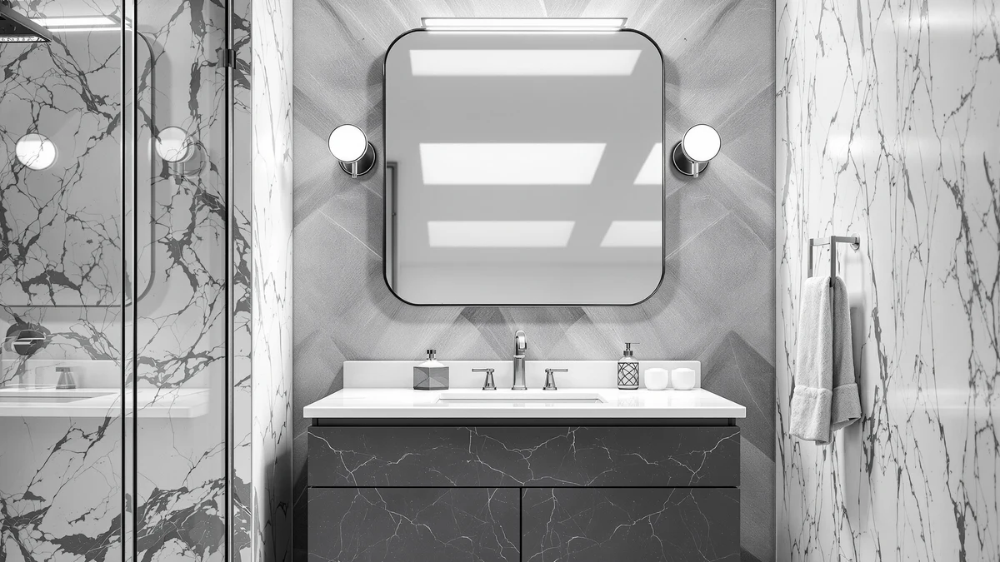

KUPUARU 60" Bathroom Vanity Review (2026): Worth It?
Prices and picks verified as of October 2026. Independent, reader-supported reviews.


Quick Answer
The KUPUARU 60-inch bathroom vanity pairs a double ceramic sink top with a smart LED defog mirror cabinet, and it arrives pre-assembled so there is no cabinet building before you mount it. At $1,699.99 it undercuts similar double-sink vanities with glass countertops. That makes it a solid middle option if you're comparing a KUPUARU 60-inch bathroom vanity against pricier rivals.
Our pick: KUPUARU 60" Bathroom Vanity with — $1,699.99 Check Price on Amazon
Bottom line: our top pick is the KUPUARU 60" Bathroom Vanity with Sink at $1,699.99.
Things to Know Before You Buy
- The KUPUARU ships pre-assembled, including the ceramic top and the LED mirror cabinet, so installation is mostly mounting and plumbing hookup rather than cabinet building.
- A wall-mounted floating vanity this size needs solid blocking behind the drywall; standard anchors are not rated for a 60-inch cabinet plus two ceramic sinks full of water.
- The smart LED mirror's one-touch defog function needs a nearby outlet or in-wall wiring, so check your bathroom's electrical layout before you buy.
- Seamless ceramic sinks resist stains better than cultured marble, but ceramic can chip if something heavy is dropped into the basin.
- Soft-close hinges add cost upfront but hold up longer than standard hardware under daily double-sink use.
If you're reading a kupuaru 60" bathroom vanity review before spending $1,699.99 on a double-sink floating cabinet, you want to know whether the pre-assembled construction and smart LED mirror hold up the way the listing promises. This vanity covers a 60-inch double-sink footprint with a seamless ceramic top and a defogging mirror cabinet. That puts it in the middle of the market, above budget single-function upgrades and below premium glass-top vanities that cost several hundred dollars more.
We compared the KUPUARU against three products that regularly surface in the same search results: a large adjustable vanity from Oneroom, and two LED medicine cabinets, from Janboe and WisHomee, that work as mirror and storage upgrades rather than full vanity replacements. The KUPUARU earned its spot as the primary pick in this comparison because it combines a true double-sink layout with an integrated LED mirror in one wall-mounted unit, something none of the mirror-only alternatives offer on their own.
Why You Should Trust Us
Ilane Tall covers bathroom vanities and mirrors for Best Bathroom Mirrors, with a focus on comparing manufacturer specifications against what verified buyers report after installation. We do not run a fake testing lab, and we have not installed this particular 60-inch vanity ourselves. Instead, we compare listed materials, current Amazon pricing, and patterns across verified owner reviews for this kupuaru 60-inch bathroom vanity review. When there's a gap between what the listing promises and what reviewers actually describe receiving, we flag it.
Our Research Experience
We do not run a physical testing lab, and the KUPUARU never sat in our own bathroom before we wrote this kupuaru 60-inch bathroom vanity review. Our process starts with the manufacturer's listed specifications: sink configuration, ceramic material, cabinet construction, and mirror cabinet features. From there we cross-check current Amazon pricing against the three alternatives covered here, and we read through verified buyer feedback for recurring issues, particularly shipping damage to the ceramic top and whether the LED defog feature performs as advertised. When a listing's claims do not match what reviewers describe, we note the discrepancy instead of repeating the marketing copy.
Overview & Specs

KUPUARU 60" Bathroom Vanity with
What we like
- Arrives fully pre-assembled, including the cabinet, ceramic top, and LED mirror cabinet, so there is no on-site cabinet building
- Smart LED mirror defogs with one touch, useful right after a hot shower
- Seamless one-piece ceramic double sinks resist stains and wipe clean quickly
- Wall-mounted floating design leaves the floor open underneath for easier cleaning
Flaws but not dealbreakers
- At $1,699.99 it costs more than single-sink or mirror-only alternatives in this comparison
- A floating installation this size needs wall blocking and professional mounting, adding to the total project cost
- Ceramic sinks can chip if something heavy is dropped into the basin, unlike more impact-resistant materials
| Material | Tempered glass + aluminum |
| Size | 60in Mirror Double Sink |
The KUPUARU 60-inch bathroom vanity is built around a seamless ceramic double-sink top, a material choice that resists staining and scratching better than the laminate tops found on cheaper double-sink cabinets. Because the top is one continuous piece rather than two sinks bolted into a separate counter, there are no seams where grime can collect. Two separate faucet drillings mean both sinks work independently, so two people can wash up at the same time without crowding a single basin.
The mirror cabinet above the sinks includes a smart LED system with a one-touch defogging function, a feature most budget vanities skip entirely. Reviewers researching this kupuaru 60-inch bathroom vanity review online consistently point out that the cabinet, countertop, faucet, drain kit, and angle valve all arrive pre-assembled. That cuts installation down to wall mounting and plumbing hookup. The wall-mounted floating design leaves the floor underneath open, which makes cleaning easier but does mean the wall needs blocking strong enough to carry the cabinet's full weight plus two sinks of water.
What We Liked
The combination of a true double-sink ceramic top and a built-in LED defog mirror is the standout feature of this vanity. Most 60-inch vanities in this price range force a choice between a nicer countertop and a lighted mirror. The KUPUARU includes both without pushing the price toward the $2,000 mark that glass-top competitors reach.
We also like that the entire unit ships pre-assembled. Reviewers researching a kupuaru 60-inch bathroom vanity review before buying frequently mention that unpacking and mounting took a fraction of the time they expected compared to flat-pack vanities that require hours of cabinet assembly before installation even starts.
What Could Be Better
Price is the main tradeoff. At $1,699.99, the KUPUARU costs more than the Oneroom alternative below and considerably more than either LED medicine cabinet in this comparison, neither of which functions as a full vanity. Buyers on a tight renovation budget may find the gap hard to justify if a single sink would meet their needs.
The floating wall-mount design also means installation is not a simple drop-in job. You need a wall that can support the combined weight of the cabinet, two ceramic sinks, and water, which usually means hiring help if your bathroom wall was not built with vanity-grade blocking already in place. Factor that labor cost into your decision before you compare the KUPUARU's sticker price against a freestanding single-sink vanity that mounts to the floor instead.
Who Is It For?
This vanity fits households remodeling a shared primary bathroom who want two full sinks and integrated mirror lighting in one purchase, rather than buying a cabinet and a separate lighted mirror. If you are furnishing a rental or working with a tight budget, the price premium over a single-sink setup or a mirror-only upgrade like the Janboe may not pencil out.
It also suits buyers who want to skip cabinet assembly entirely. Anyone who has built a flat-pack vanity before knows how much time pre-assembly saves, and that convenience is part of what this kupuaru 60-inch bathroom vanity review keeps coming back to as a selling point.
Alternatives to Consider
If the KUPUARU's price or double-sink format does not fit your bathroom, these three alternatives cover a larger adjustable vanity and two LED mirror cabinets that work as lighting and storage upgrades rather than full replacements.

Editor's Pick
Oneroom 32-64IN Large Bathroom Vanity
At $1,288.99, the Oneroom 32 to 64 inch vanity costs about $400 less than the KUPUARU and adjusts to fit rough-in widths from 32 to 64 inches, which helps if your plumbing does not line up with a fixed 60-inch layout. It includes its own illuminated anti-fog mirror with a digital time and temperature display, though reviewers note the vessel-sink version sits higher on the counter than a standard drop-in basin.
$1,288.99
Check Price on Amazon
Best Value
Janboe LED Medicine Cabinet Bathroom
The Janboe LED medicine cabinet is not a vanity at all, and at $389.99 it is not meant to compete with the cabinets above it. It works as a lighting and storage upgrade for a vanity you already own, with adjustable color-temperature LED lighting, a USB shaver socket, and tempered glass shelves. Consider it if your current setup needs better mirror lighting more than a full cabinet replacement.
$389.99
Check Price on Amazon
Premium Choice
Black Bathroom Mirror Medicine Cabinets
The WisHomee medicine cabinet trades the KUPUARU's double-sink vanity format for a black-framed mirror cabinet at $299.99, with dimmable LED lighting, a shaver socket, and two adjustable-shelf doors. Its copper-free mirror resists the black spotting that cheaper bathroom mirrors develop in humid conditions. It's a reasonable standalone upgrade if you need a new mirror and storage but not a new sink.
$299.99
Check Price on AmazonFrequently Asked Questions
Is the KUPUARU 60-inch bathroom vanity worth the price compared to cheaper alternatives?
Does the KUPUARU 60-inch vanity require assembly?
Can the Janboe or WisHomee medicine cabinets replace the KUPUARU's mirror instead of buying the full vanity?
What does a full installation of the KUPUARU vanity cost beyond the $1,699.99 sticker price?
Final Verdict
This kupuaru 60-inch bathroom vanity review comes down to whether a built-in double sink and defog mirror are worth paying more than a mirror-only upgrade. The KUPUARU earns its place as the primary pick here because it bundles a seamless ceramic double-sink top, a smart LED mirror cabinet, and pre-assembled construction into one wall-mounted unit, at a price that still undercuts premium glass-top vanities by several hundred dollars. If $1,699.99 is still more than your bathroom remodel can absorb, the Oneroom alternative covers the same double-sink footprint for roughly $400 less, and either LED medicine cabinet above works if you only need to upgrade the mirror on a vanity you already own. Whichever you choose, confirm your wall has the blocking needed for a floating installation before you order.